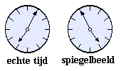

Antwoord op:
Gespiegelde Klok
Het verschil tussen de echte tijd en de tijd van het
spiegelbeeld is twee uur en tien minuten (twee en een half uur, min de twintig
minuten van het fietsen). Dus is de echte tijd op de klok thuis die ochtend,
kan alleen vijf minuten over zeven zijn geweest:

Het verschil tussen deze klokken (de echte tijd en het
spiegelbeeld) is precies twee uur en tien minuten (merk op dat vijf minuten over één
op een zelfde manier gespiegeld kan worden, maar dit is geen tijdstip in de ochtend!).
Conclusie: De jongen kwam om vijf voor half acht
op school aan (vijf over zeven vertrokken plus twintig minuten fietsen)!...
![[TERUG]](left.gif) terug naar de puzzel
terug naar de puzzel
Copyright © 1996-2005. RJE-productions. All rights reserved.